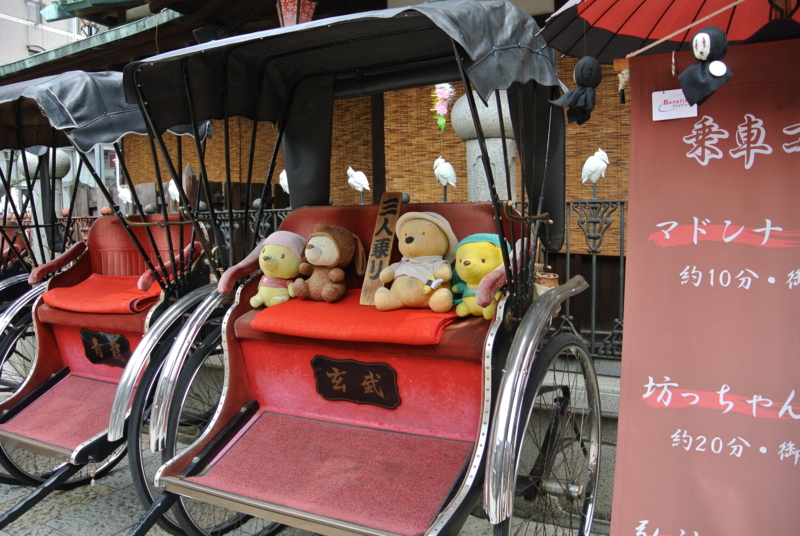
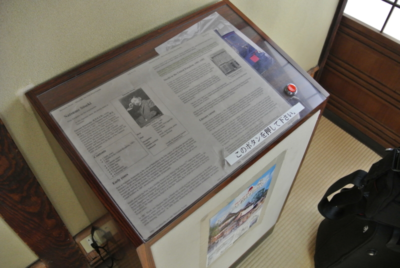
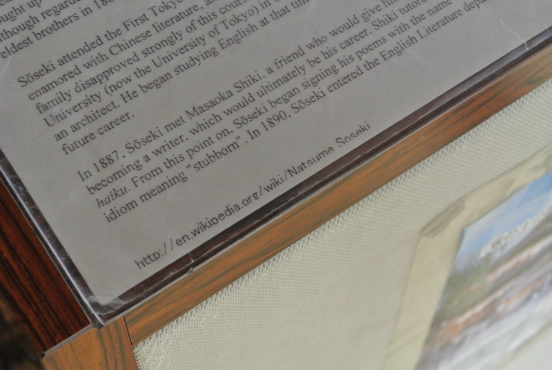

ところでこれを見てくれ。こいつをどう思う？
公開日：

道後温泉へ行ってきたった - だるろぐ に関連する小噺を一つ。
おっと、小噺で思い出したけど、セッションを担当するときは小噺を用意しておいた方がいいよ。デモで待ち時間が多いときや、失敗したのを取り繕うときに使える。プログラミング生放送勉強会 第22回＠松山に参加してきました #pronama - だるろぐ のデモで、ひたすら Git の競合を解決していた @nakaji が言ってた（ぁ
それはともかく。これを見てくれ。こいつをどう思う？

道後温泉本館には“坊っちゃんの間”というのがあって、夏目漱石に関する資料を集めた部屋がある。そこには英語での案内も掲示されているのだけれど。

まさかの Wikipedia 丸コピ！！
@5zj が見つけたのだけれど、だいぶ笑った。
でも、まぁ、いいんじゃないでしょうか。海外にも夏目漱石に興味を持ってくれている人がいっぱいいて、百科事典の記事まである。それが地元で再利用されて、海外からの観光客のために役立っているだなんて、ちょっと素敵なことじゃない？